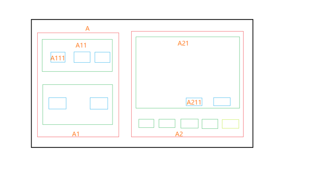

单例模式与信号中心1
信号中心的作用、单例模式介绍、饿汉式方式实现。
问题
如下为一较为复杂的界面布局图，假设, A1/A11/A2/A21/分别为独立的控件类，A111为一Button，A211为一Label。
需求：当点击ButtonA111时，LabelA211做相应逻辑联动，比如Label显示Button的点击总次数。

通常的做法是当A111点击时，
A111—-connect—–>A11控件—-connect—–>A1控件—-connect—–>A控件—-connect并set—–>
A2控件—-set—–>A21控件—-set—–>A211控件———->显示点击总次数
整个流程走下来信号转信号，接口调接口，相当繁琐。
通常下应该避免出现这种问题，万一有这种需求，可以：
- 减少小类封装，以适当减少封装层数；
- 提刀去见产品经理；
- 信号中心转发信号。
信号中心通常设计为单例模式。
单例模式
单例模式（Singleton Pattern）是 Java （也是C++)中最简单(划掉)的设计模式之一。这种类型的设计模式属于创建型模式，它提供了一种创建对象的最佳方式。
这种模式涉及到一个单一的类，该类负责创建自己的对象，同时确保只有单个对象被创建。这个类提供了一种访问其唯一的对象的方式，可以直接访问，不需要实例化该类的对象。
注意：
- 单例类只能有一个实例（应该禁止赋值和拷贝）
- 单例类必须自己创建自己的唯一实例。
- 单例类必须给所有其他对象提供这一实例。
通常的单例模式形式如下
1 | |
- 禁止赋值和拷贝；
- 禁止用户自己声明并定义实例；
- 使用 static 类成员函数
getInstance()返回唯一实例。
常见的单例模式实现方法分为饿汉式和懒汉式。
饿汉式
饿汉式：类加载的时候就实例化。
1 | |
至此，我们可以说单例模式毕竟是是最简单的设计模式，连实现起来都这么简单，不用理会懒汉式这么多痛苦。颇费~
但是饿汉式也有不足，就是程序加载时就实例化；
- 如果该类实例化需要较长时间，可能会拖慢系统启动时间。
- 如果单例类是个不常用的类，并不是每次运行都需要加载，这还会浪费空间。
即使在不支持C++11的编译器版本，也可将该实现方法应用于多线程环境中。
参考
本博客所有文章除特别声明外，均采用 CC BY-SA 4.0 协议 ，转载请注明出处！